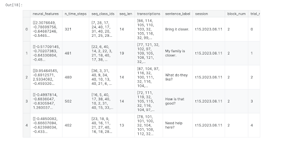

I enjoy building practical AI-driven projects and solving tough coding problems. As a Computer Science student at UW–Madison, I combine creativity and logic through technology, art, and data.
View My Work Get In TouchA blend of research, engineering, and academic rigor — focused on building intelligent systems that create real-world impact.
Undergraduate researcher at UW–Madison analyzing large language model reasoning using Graph-of-Thought frameworks. Published research in machine learning applications for healthcare prediction, achieving 85% accuracy on patient datasets.
Proficient in Python, Java, C/C++, and JavaScript with experience in PyTorch, NumPy, OpenCV, AWS, Docker, React, Flask, and Node.js. Experienced with LLM APIs for AI applications.
Pursuing dual B.S. in Computer Science and Data Science at UW–Madison with a 3.74 GPA. Lumiere Research Scholar with published work in AI-driven healthcare solutions.
Brain-to-Text Decoder — Neural Signal Processing & Deep Learning

Developed a brain-computer interface that decodes attempted speech from 512-channel neural signals into phoneme sequences. Applied Principal Component Analysis to reduce dimensionality by 25% while retaining 95% variance, then designed a CNN-RNN hybrid architecture for neural time-series processing — enabling assistive communication for individuals with speech or motor impairments.
Software Engineering Intern — Tweaking Technologies
Collaborated with a team of frontend engineers to create an intuitive mobile app interface, achieving a 20% increase in user satisfaction scores.
Implemented a comprehensive feedback system that collected over 300 user responses in the first month, directly informing 3 key feature updates.
Developed a logging system that reduced troubleshooting time by 35% and increased decision-making accuracy by 40%.
Researching reinforcement learning strategy collapse in large language models at UW–Madison's Wisconsin Institute for Discovery. Co-developing trajectory-based frameworks and interactive visualization tools to map AI reasoning paths and improve model generalization.
Learn MoreActively seeking Summer 2026 internships and research opportunities in AI/ML engineering, brain-computer interfaces, or LLM development. Let's collaborate on projects that push the boundaries of intelligent systems.
Get In Touch